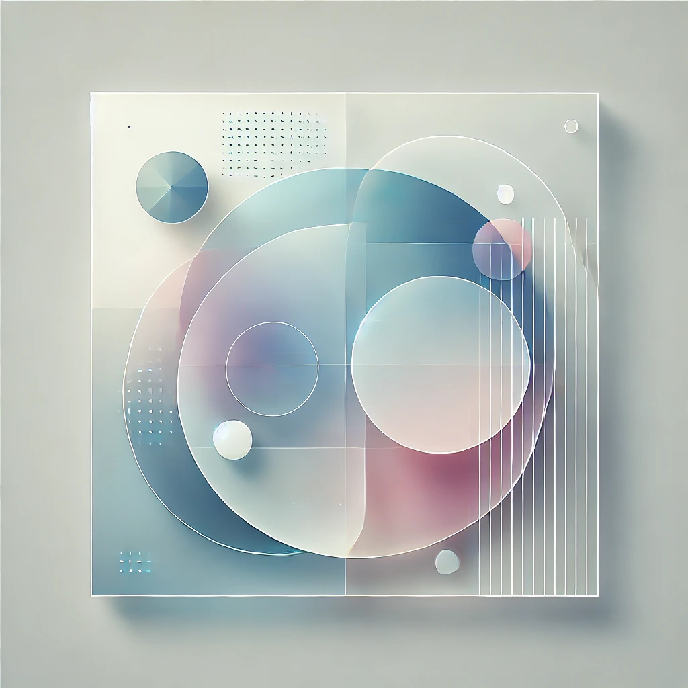

Bienvenue chez Green click
Solutions web innovantes & éco-responsables
Développeur freelance spécialisé dans la création de sites web sur mesure, je vous accompagne dans la réalisation de votre projet, que ce soit pour un site vitrine, une boutique en ligne ou une refonte complète.
Je combine expertise technique et passion pour créer des sites web et des applications mobiles qui vous permettent de vous démarquer. De plus, je vous aide à améliorer votre visibilité en ligne grâce à des services d'optimisation SEO, afin de booster votre référencement et améliorer votre classement dans les moteurs de recherche.
Mes services
Pourquoi choisir Green Click ?
Je suis Green Click, votre développeur web freelance, et mon objectif est de créer des sites web et des solutions numériques sur-mesure qui vous aident à vous démarquer. Contrairement aux agences classiques, je mets un point d'honneur à offrir des services personnalisés, axés sur la performance, la rapidité et le respect de l'environnement. Voici pourquoi vous devriez choisir de travailler avec moi :
1. Des sites rapides, performants et éco-responsables
Je crée des sites internet légers et rapides à charger en évitant l'utilisation de frameworks lourds ou de CMS trop gourmands en ressources. Cela permet d'optimiser la vitesse de votre site tout en offrant une expérience utilisateur fluide. Avec une approche éco-conçue, je m'assure que chaque site respecte l'environnement en optimisant la consommation d'énergie et en réduisant l'empreinte carbone.
2. SEO intégré dès la conception
Le référencement naturel (SEO) est au cœur de chaque projet que je développe. Dès le début de la conception, j'intègre les meilleures pratiques SEO afin que votre site soit optimisé pour un bon classement sur Google. Que ce soit pour une site vitrine, un e-commerce, ou une application mobile, je travaille à vous garantir une visibilité accrue et à attirer des visiteurs qualifiés grâce à un contenu bien structuré et optimisé pour les moteurs de recherche.
3. Des solutions sur mesure, adaptées à vos besoins spécifiques
Chaque projet est unique. Que vous ayez besoin d'un site vitrine, d'une boutique en ligne, d'une application mobile ou d'une solution SaaS, je conçois des solutions personnalisées qui répondent spécifiquement à vos besoins. Avec une interface intuitive et adaptée à vos utilisateurs, je veille à ce que chaque fonctionnalité du site soit pensée pour maximiser l'engagement de vos visiteurs et convertir les prospects en clients.
4. Un accompagnement humain et personnalisé
Travailler avec moi, c'est avoir l'assurance d'un accompagnement personnalisé tout au long de votre projet. Je vous écoute attentivement, je réponds à toutes vos questions, et je suis disponible pour discuter des ajustements nécessaires à chaque étape. Mon approche est transparente, et je mets un point d'honneur à respecter vos délais et à offrir une qualité irréprochable.
5. Livraison rapide et service de qualité
Je suis réactif et j'applique une méthode de travail Agile, ce qui me permet de m'adapter rapidement à vos retours et de livrer votre projet dans les délais impartis. Chaque étape du processus est pensée pour maximiser la qualité du produit final tout en garantissant une livraison rapide et une satisfaction totale.
Les avantages de travailler avec moi :
- Sites rapides et performants : Optimisation pour la vitesse et l'efficacité.
- SEO optimisé : Augmentation de votre visibilité sur Google pour attirer plus de trafic qualifié.
- Solutions sur mesure : Développement personnalisé et adapté à vos besoins spécifiques.
- Accompagnement personnalisé : Un service client humain et une écoute attentive à chaque étape de votre projet.
- Livraison rapide et de qualité : Respect des délais et garantie d'un produit final impeccable.
- Vous avez un projet web en tête, un idée, une question ? Contactez-moi
En choisissant de travailler avec Green Click, vous optez pour un développeur freelance passionné, capable de transformer vos idées en solutions digitales concrètes. Je mets tout en œuvre pour que chaque projet soit un succès, en alliant performance technique et respect de vos attentes spécifiques.
Mes valeurs
Satisfaction du client
Votre satisfaction est ma priorité absolue. Je ne considère pas un projet comme terminé tant que vous n'êtes pas pleinement satisfait du résultat. Mon approche repose sur une relation humaine solide et un engagement total envers vos besoins. Je travaille en étroite collaboration avec vous pour comprendre vos attentes et m'assurer que chaque aspect du projet y répond parfaitement.
Après la livraison, je reste disponible pour toute question ou ajustement, afin de garantir que votre solution web continue d'évoluer et d'atteindre vos objectifs. Votre succès est ce qui me motive au quotidien, et je m'engage à dépasser vos attentes à chaque étape du projet.
Qualité
La qualité est une valeur fondamentale pour moi. Je livre des sites web de haute qualité, optimisés pour la performance, la sécurité et l'expérience utilisateur. Chaque ligne de code est écrite avec soin pour garantir une navigation fluide, un temps de chargement rapide et une accessibilité optimale, tout en offrant une expérience utilisateur exceptionnelle. Mon objectif est de dépasser vos attentes et de vous fournir une solution durable et évolutive.
Éco-conception
Je crois fermement que le développement web peut et doit être écologique. C'est pourquoi je privilégie l'éco-conception dans chacun de mes projets. Je m'engage à minimiser l'empreinte carbone de chaque solution numérique en optimisant la consommation d'énergie, en réduisant la taille des fichiers et en choisissant des hébergements écologiques. Vous bénéficiez ainsi d'une solution web performante, rapide et respectueuse de l'environnement. Voici quelques actions concrètes que je mets en œuvre pour intégrer l'éco-conception dans mes projets web :
Avec Green click, je crois que le développement web peut être à la fois performant et respectueux de l'environnement. Mon approche d'éco-conception se traduit par :
- Optimisation des images et des fichiers : Compression des images, des vidéos et des fichiers pour réduire leur taille sans perdre en qualité, ce qui permet un chargement plus rapide du site et une consommation énergétique réduite.
- Réduction des requêtes HTTP : Minimise le nombre de requêtes faites lors du chargement du site en combinant et en réduisant les fichiers CSS et JavaScript, ce qui réduit la consommation de bande passante.
- Choix d'hébergement écologique : J'opte pour des hébergeurs web qui utilisent des énergies renouvelables et qui ont une politique environnementale responsable.
- Code propre et optimisé : Un code léger et efficace, évitant les lignes inutiles, ce qui réduit la consommation de ressources serveur et améliore la rapidité du site.
- Réduction des animations et contenus lourds : Limitation de l'utilisation d'animations et d'éléments multimédia gourmands en ressources pour réduire l'impact sur la consommation d'énergie des utilisateurs.
- Optimisation mobile-first : Prioriser la version mobile du site, car un design responsive adapté à tous les appareils permet de réduire la consommation de données et d'améliorer l'expérience utilisateur.
Transparence
Je m'engage à être totalement transparent dans ma façon de travailler. Dès le début de chaque projet, vous êtes informé des étapes clés, des délais et des tarifs. Chaque décision est prise ensemble, en toute confiance. Ma communication est claire et honnête, afin que vous soyez toujours au courant de l'avancement du projet et que vous puissiez suivre chaque étape de sa réalisation.
Innovation
Je veille à ce que chaque solution digitale que je développe réponde non seulement à vos besoins actuels, mais soit également prête à s'adapter aux évolutions futures. En intégrant les dernières technologies et en anticipant les changements, je vous aide à rester compétitif et à faire croître votre présence en ligne sur le long terme.

FAQ
Pourquoi choisir un développement web éco-responsable ?
Un développement web éco-responsable permet de réduire l'empreinte énergétique et de maximiser l'efficacité des ressources utilisées.Chaque projet est conçu pour être rapide, léger et optimisé, réduisant ainsi l'impact environnemental. En choisissant cette approche, vous contribuez à un développement plus durable.
Pourquoi choisir un développeur freelance plutôt qu'une agence pour votre projet web ?
Choisir un développeur freelance vous permet de bénéficier d'une relation directe et plus personnalisée. Je suis votre point de contact unique et dédié, ce qui garantit une plus grande réactivité et flexibilité. En outre, mes tarifs sont souvent plus compétitifs que ceux des agences, tout en offrant des solutions sur-mesure adaptées à vos besoins précis.
Quels sont les tarifs d'un développement web sur-mesure ?
Les tarifs varient en fonction de la complexité et des spécifications de votre projet. Je propose des devis personnalisés, transparents et détaillés, adaptés à vos besoins. Que vous ayez besoin d'un simple site vitrine ou d'une application web complexe, je m'engage à vous fournir un devis juste et sans surprise.
Est-ce que vous proposez des services de référencement SEO pour mes sites web ?
Oui, chaque projet que je développe inclut une optimisation de base pour le référencement naturel (SEO). Dès la phase de conception, j'intègre des pratiques SEO pour vous garantir une bonne visibilité sur les moteurs de recherche. Je m'assure également que votre site soit optimisé pour la vitesse de chargement et l'expérience utilisateur, deux facteurs importants pour le SEO.
Quelles sont les étapes du processus de développement web ?
Le processus se décompose en plusieurs étapes clefs :
- Analyse de vos besoins : Je commence par comprendre vos objectifs pour définir le cahier des charges de votre projet.
- Conception : Élaboration de l'architecture du site et de la charte graphique, en tenant compte de l'expérience utilisateur.
- Développement : Création du site ou de l'application selon les spécifications définies.
- Tests : Vérification de la performance, de la sécurité et de la compatibilité sur différents appareils et navigateurs.
- Lancement et suivi : Mise en ligne du projet après validation et test final.Je propose également des services de suivi et de maintenance pour assurer que votre site reste performant et sécurisé sur le long terme.
Quel type de projet puis-je confier à un développeur freelance comme vous ?
Je prends en charge une large gamme de projets web, notamment : création de sites vitrines, développement d'applications web et mobiles, solutions e-commerce, développement de plateformes sur-mesure, intégration d'API, et bien plus encore. Si vous avez une idée en tête, je peux la transformer en solution numérique performante, adaptée à vos objectifs spécifiques.